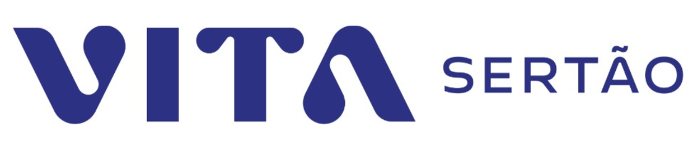

VITA Sertão assina contrato de concessão de 35 anos com compromisso de investir R$ 3,4 bilhões em água e esgoto no Sertão Pernambucano
Publicado em 07/04/2026
Em evento com o Governo de Pernambuco, nova concessionária vencedora do Bloco 1 do Leilão da Compesa anuncia início do período de operação assistida da concessão e assume compromisso de levar água e esgoto tratado a mais de 815 mil pessoas em 24 municípios; R$ 483 milhões em outorga, em valores atualizados pelo IPCA, já foram pagos ao Estado; tarifas serão reduzidas em 5%, quando a nova concessionária assumir a operação

Petrolina (PE), 07 de abril de 2026 – A VITA Sertão, nova concessionária de saneamento criada para impulsionar o desenvolvimento do Sertão Pernambucano, oficializou nesta terça-feira (7), em evento organizado pelo Governo de Pernambuco, o início da operação assistida da concessão dos serviços de distribuição de água, coleta e tratamento de esgoto e gestão comercial em 24 municípios e 229 localidades do Sertão do Estado, beneficiando mais de 815 mil pessoas ao longo de 35 anos. A operação assistida é a fase de transição, com duração de até seis meses, em que a Compesa segue responsável pela prestação dos serviços enquanto a VITA Sertão estrutura suas equipes, aprofunda diagnósticos técnicos e refina o planejamento de investimentos. O contrato de concessão foi assinado no dia 2 de abril e a primeira parcela da outorga, correspondente a 60% do total de cerca de R$ 825 milhões – valores atualizados pela variação do IPCA desde a data-base do contrato- foi quitada no dia 6 de abril, reafirmando o comprometimento da nova concessionária com o projeto. A VITA Sertão é uma empresa investida do Fundo V de Infraestrutura do Patria Investimentos, uma das maiores gestoras de ativos alternativos da América Latina, com mais de 20 anos de experiência em infraestrutura. A VITA Sertão assumirá a operação em 29 de setembro de 2026.
O contrato é resultado do leilão público realizado em 18 de dezembro de 2025, estruturado pelo BNDES (Banco Nacional de Desenvolvimento Econômico e Social) e acompanhado pelos órgãos de controle. A VITA Sertão venceu o certame do Bloco 1 do Sertão com a proposta que ofereceu o maior benefício direto à população: o desconto máximo permitido de 5% sobre as tarifas vigentes e a outorga de R$ 720 milhões. O contrato prevê R$ 3,4 bilhões em investimentos ao longo dos 35 anos de concessão, com R$ 2,8 bilhões concentrados nos primeiros 8 anos, para que a transformação chegue rápido a quem mais precisa, cumprindo as metas do Marco Legal do Saneamento até o final de 2034. A concessão será continuamente fiscalizada pela ARPE (Agência de Regulação de Pernambuco), garantindo o cumprimento de metas e a qualidade dos serviços.
Ao longo dos 35 anos de concessão, as principais obras inicialmente previstas incluem:
- +450 km de adutoras novas e revitalizadas, aumentando a segurança hídrica da região
- +2.600 km de novas redes de distribuição de água e coleta de esgoto
- +270 mil novas ligações de água e esgoto
- +1,2 milhão de hidrômetros novos ou substituídos
Nos meses que antecederam a assinatura, equipes da VITA Sertão já estiveram presentes na região, participando de algumas reuniões com prefeitos, secretários e representantes das comunidades dos municípios, avaliando alguns dos investimentos necessários e aprofundando os diagnósticos técnicos de campo, bem como com a Compesa e o Governo de Pernambuco. Ao longo da operação assistida, a VITA Sertão buscará uma agenda individual com os municípios para detalhar mais as necessidades de cada localidade.
“VITA significa vida, em latim. E vida é exatamente o que o acesso à água tratada e ao esgoto coletado e tratado representa para cada família do Sertão. Nossa sede será em Petrolina, nossa equipe será formada majoritariamente por pessoas de nossa região de atuação, e nosso compromisso é com cada um dos 24 municípios e com o Governo de Pernambuco. Nosso objetivo é transformar a realidade do saneamento, gerar empregos, melhorar os indicadores de saúde e posicionar o Sertão Pernambucano como um exemplo de desenvolvimento sustentável e social no Brasil”, afirma Eduardo Dantas, CEO da VITA Sertão.
Como funciona a concessão de saneamento
As concessões são parcerias em que o poder público contrata uma empresa privada para operar, manter e, principalmente, investir na modernização de um serviço essencial por um tempo determinado. A água continua sendo um bem público e a Microrregião do Sertão permanece como titular do serviço tendo delegado ao Estado de Pernambuco o papel de Poder Concedente e a gestão do contrato de concessão. A VITA Sertão, após o período de operação assistida, será responsável por levar a água tratada até as casas, cuidar da coleta e tratamento do esgoto, fazer a gestão comercial e realizar os investimentos necessários para universalizar o acesso, sempre sob a regulação e fiscalização do poder público.
Neste modelo, a Compesa continua sendo parte integrante da operação, responsável pela captação, tratamento da água e entrega da água tratada à VITA Sertão nos pontos de entrega contratuais. A VITA Sertão assume a distribuição dessa água, a gestão comercial e todo o sistema de esgotamento sanitário. A transição será feita em uma fase de operação assistida de até seis meses, garantindo a continuidade e a estabilidade dos serviços através de uma transferência suave da Compesa para a nova concessionária.
O que muda para os moradores dos municípios
Até 28 de setembro de 2026, período de operação assistida, nada muda para quem mora nos 24 municípios. As contas continuam sendo emitidas e pagas da mesma forma. O atendimento segue sendo realizado pela Compesa.
Neste período, a VITA Sertão contratará e treinará suas equipes locais, realizará diagnósticos técnicos em campo e planejará as primeiras intervenções.
A partir de 29 de setembro de 2026, a VITA Sertão assume integralmente a distribuição de água, o atendimento comercial e o esgotamento sanitário nos 24 municípios. Os novos canais de atendimento ao cidadão — presencial (em todos os municípios), telefônico, WhatsApp e digital — serão amplamente divulgados antes desta data.
Impacto social, emprego e proteção às famílias vulneráveis
A nova concessão atuará como indutor de um novo ecossistema de desenvolvimento, promovendo a geração de mais de 500 empregos diretos e mais de 1.000 indiretos, com prioridade para contratação de mão de obra local e regional. Os empregos abrangem operação e manutenção de sistemas de água e esgoto, engenharia, construção civil, área comercial, atendimento ao cliente e administração.
Aproximadamente 60 mil famílias de baixa renda serão beneficiadas com a Tarifa Social, garantindo acesso aos serviços com valores reduzidos ao se enquadrarem nas regras estabelecidas pela Agência Nacional de Águas (ANA) e Governo de Pernambuco. Além disso, será mantido o benefício da tarifa vulnerável atualmente vigente na região para alguns clientes.
A concessão também fortalece a economia local dos 24 municípios (Afrânio, Araripina, Bodocó, Cabrobó, Cedro, Dormentes, Exu, Granito, Ipubi, Lagoa Grande, Moreilândia, Orocó, Ouricuri, Parnamirim, Petrolina, Salgueiro, Santa Cruz, Santa Filomena, Santa Maria da Boa Vista, São José do Belmonte, Serrita, Terra Nova, Trindade, Verdejante), com polos operacionais em Petrolina, Ouricuri e Salgueiro, garantindo presença descentralizada e geração de renda em toda a área atendida, com crescimento econômico sustentável e impactos positivos na saúde pública e em cadeias produtivas da região.
Sobre a VITA Sertão
A VITA Sertão é a concessionária de saneamento criada para impulsionar o desenvolvimento do Sertão de Pernambuco. Responsável pela distribuição de água tratada, coleta e tratamento de esgoto e gestão comercial em 24 municípios e 229 localidades, atendendo mais de 815 mil pessoas ao longo de uma concessão de 35 anos, a empresa tem sede em Petrolina e polos operacionais em Petrolina, Ouricuri e Salgueiro. A VITA Sertão é investida do Fundo V de Infraestrutura do Patria Investimentos, uma das maiores gestoras de ativos alternativos da América Latina. VITA Sertão: vida para o Sertão.
Atendimento à imprensa VITA Sertão
Assessoria de Imprensa: VITA@ideal-axicom.com
Larissa Nato: (12) 98288-4187 / larissa.nato@ideal-axicom.com
João Sugahara: (11) 9998-44100 / joao.sugahara@ideal-axicom.com